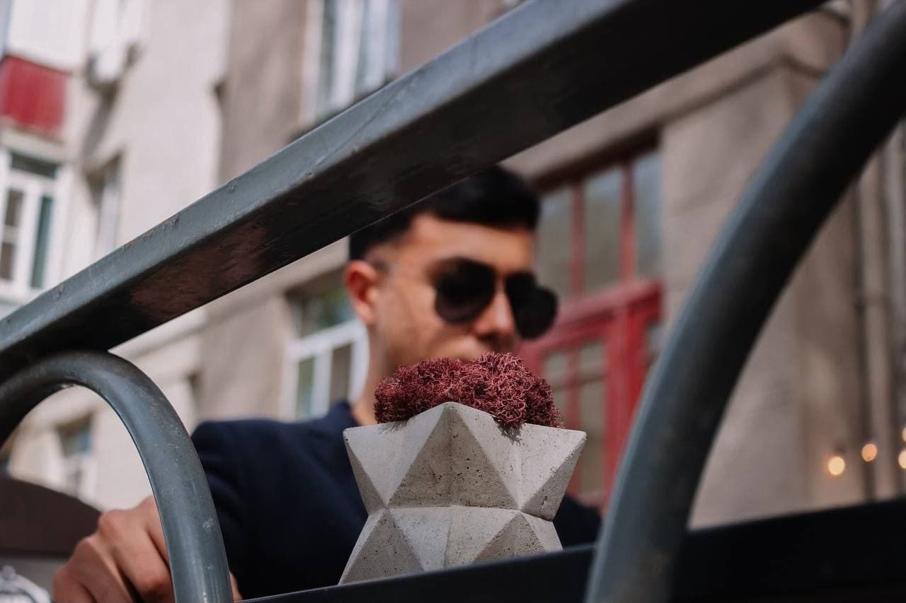
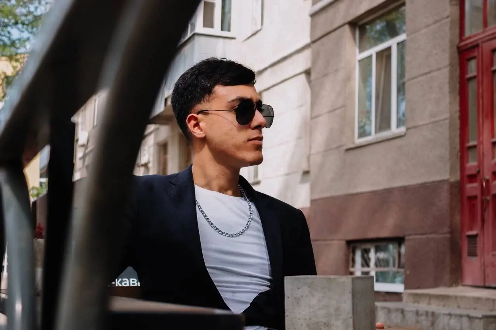

Портфолио фотографа
Здравствуйте! Меня зовут Кирилл, и я фотограф, увлеченный искусством создания выразительных снимков. Каждая фотография в этом портфолио отражает мой взгляд на окружающий мир, внимание к деталям и стремление передавать искренние эмоции. Я постоянно совершенствую свои навыки и пополняю коллекцию работ, превращая каждую съемку в новый шаг профессионального развития

Я бы охарактеризовал данную фотографию как "Городская суета"

Я бы охарактеризовал данную фотографию как "Момент тишины города"

